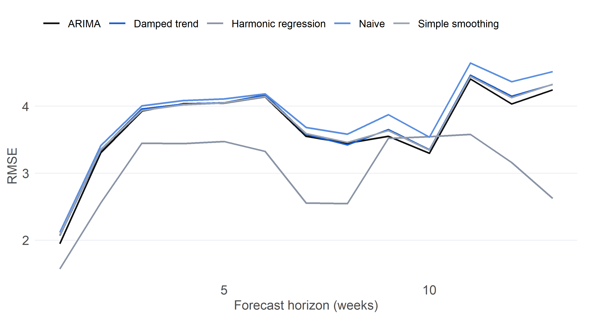

Worked tutorials, an implementation from first principles, and one idea beyond the notes
Overview
This section covers models for forecasting and for structure that changes over time. Exponential smoothing is the simplest state-space model. Regression adds explanatory terms such as harmonics, indicator variables and count-data models. The Kalman filter treats a quantity like a level or a regression coefficient as an unobserved state that moves over time. Hidden Markov models do the same for a discrete state, so the series switches between regimes.
I used the regression material in Project 3 (a negative-binomial model for withdrawals) and the state-space material in Project 4 (a time-varying beta). The tutorials here compare five forecasting methods on Eskom’s EAF, then build a hidden Markov model from first principles and test whether its regime lengths behave as the model assumes.
All tutorials use the weekly Eskom Energy Availability Factor (EAF) from Project 2, with 232 weeks from Apr 2019 to Sept 2023.
Tutorial 2.1: Forecasting EAF by smoothing, regression and ARIMA
Aim. Compare five forecasting methods on the same series by repeatedly forecasting a quarter ahead from many starting points, then forecast 26 weeks ahead with the best one.
The methods are a naive forecast (repeat the last value), simple exponential smoothing, damped-trend exponential smoothing, an automatically selected ARIMA, and harmonic regression: a linear trend plus two annual sine-cosine pairs, with AR(1) errors.
nf <-function(tr) ts(as.numeric(tr), frequency =1) # drop the weekly frequency for non-seasonal methodsfc_fun <-list(Naive =function(tr, h) forecast::rwf(nf(tr), h = h),`Simple smoothing`=function(tr, h) forecast::forecast(forecast::ets(nf(tr), model ="ANN"), h = h),`Damped trend`=function(tr, h) forecast::forecast(forecast::ets(nf(tr), model ="AAN", damped =TRUE), h = h),ARIMA =function(tr, h) forecast::forecast(forecast::auto.arima(nf(tr), seasonal =FALSE), h = h),`Harmonic regression`=function(tr, h) { nt <-length(tr) xr <-cbind(trend =seq_len(nt), forecast::fourier(tr, K =2)) # trend + 2 harmonics fit <- forecast::Arima(tr, order =c(1, 0, 0), xreg = xr) # AR(1) errors xf <-cbind(trend = nt +seq_len(h), forecast::fourier(tr, K =2, h = h)) # future regressors forecast::forecast(fit, h = h, xreg = xf) })
Code
H <-13# horizon: one quarterorigins <-seq(130, n - H, by =6) # forecast origins, six weeks apartroll <-map_dfr(origins, function(o) { tr <-ts(y[1:o], frequency =52); act <- y[(o +1):(o + H)] # training data and the next H actual valuesimap_dfr(fc_fun, function(f, nm) { fc <-tryCatch(f(tr, H), error =function(e) NULL)if (is.null(fc)) return(NULL)tibble(origin = o, model = nm, h =1:H, err = act -as.numeric(fc$mean)) })})
Code
acc <- roll |>group_by(model) |>summarise(RMSE =sqrt(mean(err^2)), MAE =mean(abs(err)),`RMSE, 1 week`=sqrt(mean(err[h ==1]^2)), `RMSE, 13 weeks`=sqrt(mean(err[h ==13]^2)),.groups ="drop") |>mutate(`Ratio to naive`= RMSE / RMSE[model =="Naive"]) |>arrange(RMSE)kable(acc, digits =2)
Table 1: Forecast accuracy over repeated forecast origins. RMSE is in percentage points of EAF.
model
RMSE
MAE
RMSE, 1 week
RMSE, 13 weeks
Ratio to naive
Harmonic regression
3.08
2.46
1.57
2.62
0.79
ARIMA
3.74
3.12
1.95
4.24
0.96
Simple smoothing
3.78
3.16
2.08
4.33
0.97
Damped trend
3.78
3.18
2.07
4.33
0.97
Naive
3.90
3.28
2.12
4.51
1.00
Code
best_nm <- acc$model[1]
Code
roll |>group_by(model, h) |>summarise(RMSE =sqrt(mean(err^2)), .groups ="drop") |>ggplot(aes(h, RMSE, colour = model)) +geom_line(linewidth =0.7) +scale_colour_manual(values =c(pal[["ink"]], pal[["blue"]], pal[["grey"]], "#5b8fe0", "#9aa3b2"), name =NULL) +labs(x ="Forecast horizon (weeks)", y ="RMSE")

Figure 1: Forecast error by horizon for each method.
Over 15 forecast origins, the most accurate method is Harmonic regression with an RMSE of 3.08, which is 21% below the naive forecast. With so few origins the ranking among close competitors is noisy, so I read the table as showing which methods are clearly worse rather than crowning a winner.
Figure 2: 26-week forecast of EAF from the best method, with 80% and 95% prediction intervals.
Limitations. The forecast intervals assume the model is correct and the errors are Gaussian, and the interval width does not reflect the uncertainty of choosing among methods. The sample covers an unusual period of grid stress, so accuracy over it may not carry forward. The Eskom data end in September 2023.
Implementation 2.2: A hidden Markov model from first principles
Aim. Describe EAF as a Gaussian hidden Markov model with m regimes (for example normal and stressed operation), estimate it by the Baum-Welch (EM) algorithm that I code myself, decode the most likely regime path with the Viterbi algorithm, and choose the number of regimes by BIC.
With hidden state S_t\in\{1,\dots,m\}, transition matrix A and X_t\mid S_t=i\sim N(\mu_i,\sigma_i^2), the likelihood is computed by the forward recursion. I scale each step, because unscaled probabilities underflow over 232 weeks:
The backward pass and the EM updates follow from the posterior state probabilities \gamma_t(i) and the expected transitions \xi_t(i,j).
# State-conditional densities: T x m matrixhmm_dens <-function(x, mu, sg) outer(x, seq_along(mu), function(xx, j) dnorm(xx, mu[j], sg[j]))# Scaled forward algorithm: filtered state probabilities and the log-likelihoodhmm_forward <-function(x, mu, sg, A, delta) { nT <-length(x); m <-length(mu); B <-hmm_dens(x, mu, sg) al <-matrix(0, nT, m); cc <-numeric(nT) a <- delta * B[1, ]; cc[1] <-sum(a); al[1, ] <- a / cc[1]for (t in2:nT) { a <-drop(al[t -1, ] %*% A) * B[t, ]; cc[t] <-sum(a); al[t, ] <- a / cc[t] }list(loglik =sum(log(cc)), alpha = al, c = cc, B = B)}# Scaled backward algorithm, using the forward scaling constantshmm_backward <-function(A, B, cc) { nT <-nrow(B); be <-matrix(1, nT, ncol(B))for (t in (nT -1):1) be[t, ] <-drop(A %*% (B[t +1, ] * be[t +1, ])) / cc[t +1] be}# Baum-Welch: EM until the log-likelihood stops improvingbaum_welch <-function(x, mu, sg, A, delta, maxit =500, tol =1e-9) { m <-length(mu); nT <-length(x); ll_old <--Inf; lls <-numeric(0)for (it inseq_len(maxit)) { fw <-hmm_forward(x, mu, sg, A, delta); be <-hmm_backward(A, fw$B, fw$c) g <- fw$alpha * be # P(state at t | all data) xi <-matrix(0, m, m) # expected transition countsfor (t in1:(nT -1)) xi <- xi +outer(fw$alpha[t, ], fw$B[t +1, ] * be[t +1, ]) * A / fw$c[t +1] lls <-c(lls, fw$loglik) delta <- g[1, ] A <- xi /colSums(g[-nT, , drop =FALSE]) # each row divided by its expected visits w <-colSums(g); mu <-colSums(g * x) / w # weighted means sg <-pmax(sqrt(colSums(g * (x -rep(mu, each = nT))^2) / w), 1e-3*sd(x)) # weighted sds, flooredif (abs(fw$loglik - ll_old) < tol * (abs(fw$loglik) + tol)) break ll_old <- fw$loglik }list(mu = mu, sg = sg, A = A, delta = delta, loglik =hmm_forward(x, mu, sg, A, delta)$loglik, lls = lls, iter = it)}# Several starts (quantile-based means, sticky transitions); keep the best; order states by meanfit_hmm <-function(x, m, nstart =10, seed =1) {set.seed(seed); best <-NULLfor (s inseq_len(nstart)) { mu0 <-as.numeric(quantile(x, seq(0.5/ m, 1-0.5/ m, length.out = m)))if (s >1) mu0 <-sort(mu0 +rnorm(m, 0, 0.1*sd(x))) # jitter after the first start A0 <-matrix(0.05/ (m -1), m, m); diag(A0) <-0.95# rows sum to one f <-baum_welch(x, mu0, rep(sd(x) / m, m), A0, rep(1/ m, m))if (is.null(best) || f$loglik > best$loglik) best <- f } o <-order(best$mu) best$mu <- best$mu[o]; best$sg <- best$sg[o]; best$A <- best$A[o, o, drop =FALSE]; best$delta <- best$delta[o] best}# Viterbi: most likely state path, computed on the log scaleviterbi <-function(x, mu, sg, A, delta) { nT <-length(x); m <-length(mu) lB <-log(hmm_dens(x, mu, sg) +1e-300); lA <-log(A +1e-300) v <-matrix(0, nT, m); bp <-matrix(0L, nT, m); v[1, ] <-log(delta +1e-300) + lB[1, ]for (t in2:nT) for (j in1:m) { s <- v[t -1, ] + lA[, j]; bp[t, j] <-which.max(s); v[t, j] <-max(s) + lB[t, j] } st <-integer(nT); st[nT] <-which.max(v[nT, ])for (t in (nT -1):1) st[t] <- bp[t +1, st[t +1]] st}
Checking the code
Code
# Check 1: the forward log-likelihood must equal a brute-force sum over every state path (T = 6, m = 2)set.seed(1); xs <-rnorm(6, 0, 2)mu_t <-c(0, 3); sg_t <-c(1, 1.5); A_t <-matrix(c(.9, .1, .2, .8), 2, byrow =TRUE); d_t <-c(.5, .5)brute <-sum(apply(expand.grid(rep(list(1:2), 6)), 1, function(p) { pr <- d_t[p[1]] *dnorm(xs[1], mu_t[p[1]], sg_t[p[1]])for (t in2:6) pr <- pr * A_t[p[t -1], p[t]] *dnorm(xs[t], mu_t[p[t]], sg_t[p[t]]) pr}))diff_fw <-abs(hmm_forward(xs, mu_t, sg_t, A_t, d_t)$loglik -log(brute))# Check 2: simulate a 3-state HMM with known parameters, then recover themsim_hmm <-function(nT, mu, sg, A, seed =2026) {set.seed(seed); m <-length(mu); s <-integer(nT); s[1] <- 2Lfor (t in2:nT) s[t] <-sample.int(m, 1, prob = A[s[t -1], ])list(s = s, x =rnorm(nT, mu[s], sg[s]))}mu_s <-c(54, 62, 70); sg_s <-c(2.5, 2.5, 2); A_s <-matrix(c(.93, .07, 0, .04, .92, .04, 0, .08, .92), 3, byrow =TRUE)sm <-sim_hmm(232, mu_s, sg_s, A_s)fs <-fit_hmm(sm$x, 3, nstart =5)acc_dec <-mean(viterbi(sm$x, fs$mu, fs$sg, fs$A, fs$delta) == sm$s) # share of weeks decoded correctlymono <-all(diff(fs$lls) >-1e-8) # EM must never decrease the likelihood
The scaled forward algorithm matches a brute-force sum over all 64 paths to within 0 in the log-likelihood. On a simulated three-state series, the EM log-likelihood never decreased, and the estimates are:
Table 3: Choice of the number of regimes. k counts free parameters.
States
loglik
k
AIC
BIC
1
-739.2
2
1482.4
1489.3
2
-624.0
7
1261.9
1286.1
3
-573.6
14
1175.2
1223.4
4
-532.7
23
1111.5
1190.7
BIC selects 4 regimes. (A series with a long downward trend can push BIC towards more states, because states partly act as trend steps, which I return to in the reflection.)
Figure 3: Weekly EAF coloured by the most likely regime (Viterbi path).
Code
# Predictive distribution h weeks ahead: a mixture of the regime normals weighted by pi_T A^hmu <- fb$mu; sg <- fb$sg; A <- fb$Api_T <-hmm_forward(y, mu, sg, A, fb$delta)$alpha[n, ] # filtered state probabilities at the last weekmix_q <-function(prob, p, mu, sg) # quantile of the mixtureuniroot(function(q) sum(p *pnorm(q, mu, sg)) - prob, lower =min(mu) -6*max(sg), upper =max(mu) +6*max(sg))$rootpred <-map_dfr(c(1, 13, 26), function(h) { Ah <-diag(m_best); for (k inseq_len(h)) Ah <- Ah %*% A p <-drop(pi_T %*% Ah)tibble(Horizon = h, Mean =sum(p * mu), `80% lower`=mix_q(0.10, p, mu, sg), `80% upper`=mix_q(0.90, p, mu, sg),`95% lower`=mix_q(0.025, p, mu, sg), `95% upper`=mix_q(0.975, p, mu, sg))})
Code
kable(pred, digits =1)
Table 5: Predictive mean and intervals for EAF (%) from the fitted HMM, at three horizons after the last observation.
Horizon
Mean
80% lower
80% upper
95% lower
95% upper
1
53.2
50.1
56.5
48.6
59.2
13
56.5
51.0
62.5
49.3
66.7
26
58.3
51.7
65.6
49.7
70.5
As the horizon grows, the forecast moves from the current regime towards the long-run mix of regimes, and the interval widens accordingly.
Code
# Optional cross-check against the depmixS4 package (uses its own starting values, so local optima can differ)if (requireNamespace("depmixS4", quietly =TRUE)) {suppressPackageStartupMessages(library(depmixS4)) # attach so its logLik method is registeredset.seed(1) dm <-depmix(eaf ~1, data =data.frame(eaf = y), nstates = m_best, family =gaussian()) dmf <- depmixS4::fit(dm, verbose =FALSE) # explicit namespace, since tidyverse has no fit() ll_dm <-as.numeric(logLik(dmf))}
converged at iteration 71 with logLik: -535.8169
The depmixS4 package reaches a log-likelihood of -535.82 against -532.73 for my implementation (a difference of -3.09).
Limitations. EM finds local optima, so I use several starts. The model treats the Gaussian state-conditional distribution as fixed within a regime, but EAF has a trend and an annual cycle, so regimes partly absorb them. A hidden Markov model is therefore a description of regimes, not a causal account, and the number of regimes depends on the criterion used.
Beyond the notes 2.3: Do the regimes last as long as the model says?
Idea. A hidden Markov model implies that the time spent in a regime is geometric, with mean 1/(1-a_{ii}). That is a strong assumption, and the decoded path lets me test it by comparing run lengths with the model’s expectation.
Code
rl <-rle(st)tibble(state = rl$values, len = rl$lengths) |>group_by(Regime = state) |>summarise(Runs =n(), `Observed mean run (weeks)`=mean(len), `Longest run`=max(len), .groups ="drop") |>mutate(`Expected under the HMM`=1/ (1-diag(fb$A)[Regime])) |>kable(digits =1)
Table 6: Observed regime run lengths against the geometric expectation implied by the fitted transition matrix.
Regime
Runs
Observed mean run (weeks)
Longest run
Expected under the HMM
1
3
10.7
26
14.0
2
7
12.6
35
11.8
3
8
7.2
15
7.3
4
3
18.0
29
17.1
Observed mean run lengths are close to the geometric expectation for regimes 2, 3 and 4 (12.6 against 11.8, 7.2 against 7.3, and 18.0 against 17.1 weeks). Regime 1 is shorter than expected (10.7 against 14.0). With only 21 runs in total, this is too few to reject the Markov assumption, so the data give no clear reason to prefer a semi-Markov model. I would still test the duration distribution directly with a longer series.
Reflection
Tutorials: “harmonic regression won with an RMSE of 3.08, 21% below the naive forecast, while ARIMA and the smoothing methods only reached 0.96 to 0.97 of the naive RMSE; fifteen origins is a small number, so I trust the ranking of the winner against the rest more than the order among close competitors”
HMM: “BIC chose four regimes (1190.7 against 1223.4 for three), with means of 52.8, 58.4, 63.9 and 69.6. Their roughly even spacing, together with the steady fall in EAF over the window, makes me think the regimes partly absorb the trend as well as describing genuine operating states, so I would not interpret them as separate physical regimes without a longer series.”
Journal entries for this section are in the journal, and my AI use is declared in the AI Use Log.
Source Code
---title: "Section 2: Smoothing, Regression, State-Space Models and HMMs"subtitle: "Worked tutorials, an implementation from first principles, and one idea beyond the notes"toc: truetoc-depth: 2number-sections: falseformat: html: fig-width: 7 fig-height: 3.8 fig-dpi: 200 fig-align: center---```{r}#| label: setup#| cache: false#| include: false# ---- Packages ----library(tidyverse) # wrangling and ggplot2library(lubridate) # week arithmeticlibrary(knitr) # kable tableslibrary(forecast) # ets, auto.arima, fourier termsset.seed(2026) # reproducible simulations# ---- One look for every figure ----pal <-c(ink ="#111111", blue ="#1a5fd0", grey ="#8a94a6", light ="#e6e9ef")theme_ts <-function(base =11) {theme_minimal(base_size = base) %+replace%theme(plot.title =element_text(face ="bold", hjust =0, margin =margin(b =4)),panel.grid.minor =element_blank(),panel.grid.major.x =element_blank(),panel.grid.major.y =element_line(colour = pal[["light"]], linewidth =0.3),axis.text =element_text(colour ="grey30"),axis.title =element_text(colour ="grey30"),strip.text =element_text(face ="bold", hjust =0),legend.position ="top", legend.justification ="left",plot.margin =margin(6, 10, 6, 6))}theme_set(theme_ts())# ---- Data: weekly Eskom EAF (from Project 2) ----eaf <-read_csv("../projects/project-02/data/eaf.csv", show_col_types =FALSE) |>mutate(date =as.Date(date)) |>arrange(date)stopifnot(all(as.numeric(diff(eaf$date)) ==7)) # regular weekly spacingy <- eaf$eaf; n <-length(y)```# OverviewThis section covers models for forecasting and for structure that changes over time. Exponential smoothing is the simplest state-space model. Regression adds explanatory terms such as harmonics, indicator variables and count-data models. The Kalman filter treats a quantity like a level or a regression coefficient as an unobserved state that moves over time. Hidden Markov models do the same for a discrete state, so the series switches between regimes.I used the regression material in Project 3 (a negative-binomial model for withdrawals) and the state-space material in Project 4 (a time-varying beta). The tutorials here compare five forecasting methods on Eskom's EAF, then build a hidden Markov model from first principles and test whether its regime lengths behave as the model assumes.| Topic | Where it appears ||---|---|| Exponential smoothing | Tutorial 2.1 || Regression: harmonic terms, indicators, non-normal responses | Tutorial 2.1, [Project 3](../projects/project-03/index.html) || State-space models and the Kalman filter | [Project 4](../projects/project-04/index.html) || Hidden Markov models | Implementation 2.2 |All tutorials use the weekly Eskom Energy Availability Factor (EAF) from Project 2, with `r n` weeks from `r format(min(eaf$date), "%b %Y")` to `r format(max(eaf$date), "%b %Y")`.# Tutorial 2.1: Forecasting EAF by smoothing, regression and ARIMA**Aim.** Compare five forecasting methods on the same series by repeatedly forecasting a quarter ahead from many starting points, then forecast 26 weeks ahead with the best one.The methods are a naive forecast (repeat the last value), simple exponential smoothing, damped-trend exponential smoothing, an automatically selected ARIMA, and **harmonic regression**: a linear trend plus two annual sine-cosine pairs, with AR(1) errors.```{r}#| label: forecasters#| code-fold: false#| code-summary: "The five forecasting methods behind a common interface"nf <-function(tr) ts(as.numeric(tr), frequency =1) # drop the weekly frequency for non-seasonal methodsfc_fun <-list(Naive =function(tr, h) forecast::rwf(nf(tr), h = h),`Simple smoothing`=function(tr, h) forecast::forecast(forecast::ets(nf(tr), model ="ANN"), h = h),`Damped trend`=function(tr, h) forecast::forecast(forecast::ets(nf(tr), model ="AAN", damped =TRUE), h = h),ARIMA =function(tr, h) forecast::forecast(forecast::auto.arima(nf(tr), seasonal =FALSE), h = h),`Harmonic regression`=function(tr, h) { nt <-length(tr) xr <-cbind(trend =seq_len(nt), forecast::fourier(tr, K =2)) # trend + 2 harmonics fit <- forecast::Arima(tr, order =c(1, 0, 0), xreg = xr) # AR(1) errors xf <-cbind(trend = nt +seq_len(h), forecast::fourier(tr, K =2, h = h)) # future regressors forecast::forecast(fit, h = h, xreg = xf) })``````{r}#| label: roll#| message: false#| warning: falseH <-13# horizon: one quarterorigins <-seq(130, n - H, by =6) # forecast origins, six weeks apartroll <-map_dfr(origins, function(o) { tr <-ts(y[1:o], frequency =52); act <- y[(o +1):(o + H)] # training data and the next H actual valuesimap_dfr(fc_fun, function(f, nm) { fc <-tryCatch(f(tr, H), error =function(e) NULL)if (is.null(fc)) return(NULL)tibble(origin = o, model = nm, h =1:H, err = act -as.numeric(fc$mean)) })})``````{r}#| label: tbl-acc#| tbl-cap: "Forecast accuracy over repeated forecast origins. RMSE is in percentage points of EAF."acc <- roll |>group_by(model) |>summarise(RMSE =sqrt(mean(err^2)), MAE =mean(abs(err)),`RMSE, 1 week`=sqrt(mean(err[h ==1]^2)), `RMSE, 13 weeks`=sqrt(mean(err[h ==13]^2)),.groups ="drop") |>mutate(`Ratio to naive`= RMSE / RMSE[model =="Naive"]) |>arrange(RMSE)kable(acc, digits =2)best_nm <- acc$model[1]``````{r}#| label: fig-acc#| fig-cap: "Forecast error by horizon for each method."roll |>group_by(model, h) |>summarise(RMSE =sqrt(mean(err^2)), .groups ="drop") |>ggplot(aes(h, RMSE, colour = model)) +geom_line(linewidth =0.7) +scale_colour_manual(values =c(pal[["ink"]], pal[["blue"]], pal[["grey"]], "#5b8fe0", "#9aa3b2"), name =NULL) +labs(x ="Forecast horizon (weeks)", y ="RMSE")```Over `r length(origins)` forecast origins, the most accurate method is **`r best_nm`** with an RMSE of `r sprintf("%.2f", acc$RMSE[1])`, which is `r sprintf("%.0f%%", 100 * (1 - acc$"Ratio to naive"[1]))` below the naive forecast. With so few origins the ranking among close competitors is noisy, so I read the table as showing which methods are clearly worse rather than crowning a winner.```{r}#| label: fig-final-fc#| fig-cap: "26-week forecast of EAF from the best method, with 80% and 95% prediction intervals."fcb <- fc_fun[[best_nm]](ts(y, frequency =52), 26)fut <-tibble(date =max(eaf$date) +7* (1:26), m =as.numeric(fcb$mean),l80 = fcb$lower[, 1], u80 = fcb$upper[, 1], l95 = fcb$lower[, 2], u95 = fcb$upper[, 2])ggplot() +geom_line(data =tail(eaf, 80), aes(date, eaf), colour = pal[["ink"]]) +geom_ribbon(data = fut, aes(date, ymin = l95, ymax = u95), fill = pal[["blue"]], alpha =0.12) +geom_ribbon(data = fut, aes(date, ymin = l80, ymax = u80), fill = pal[["blue"]], alpha =0.22) +geom_line(data = fut, aes(date, m), colour = pal[["blue"]], linewidth =0.8) +labs(x =NULL, y ="EAF (%)")```**Limitations.** The forecast intervals assume the model is correct and the errors are Gaussian, and the interval width does not reflect the uncertainty of choosing among methods. The sample covers an unusual period of grid stress, so accuracy over it may not carry forward. The Eskom data end in September 2023.# Implementation 2.2: A hidden Markov model from first principles**Aim.** Describe EAF as a Gaussian hidden Markov model with $m$ regimes (for example normal and stressed operation), estimate it by the Baum-Welch (EM) algorithm that I code myself, decode the most likely regime path with the Viterbi algorithm, and choose the number of regimes by BIC.With hidden state $S_t\in\{1,\dots,m\}$, transition matrix $A$ and $X_t\mid S_t=i\sim N(\mu_i,\sigma_i^2)$, the likelihood is computed by the forward recursion. I scale each step, because unscaled probabilities underflow over 232 weeks:$$\hat\alpha_t(j)=\frac{\big[\sum_i\hat\alpha_{t-1}(i)a_{ij}\big]\,b_j(x_t)}{c_t},\qquad \log L=\sum_t\log c_t.$$The backward pass and the EM updates follow from the posterior state probabilities $\gamma_t(i)$ and the expected transitions $\xi_t(i,j)$.```{r}#| label: hmm-functions#| code-fold: false#| code-summary: "Forward, backward, Baum-Welch EM and Viterbi for a Gaussian HMM"# State-conditional densities: T x m matrixhmm_dens <-function(x, mu, sg) outer(x, seq_along(mu), function(xx, j) dnorm(xx, mu[j], sg[j]))# Scaled forward algorithm: filtered state probabilities and the log-likelihoodhmm_forward <-function(x, mu, sg, A, delta) { nT <-length(x); m <-length(mu); B <-hmm_dens(x, mu, sg) al <-matrix(0, nT, m); cc <-numeric(nT) a <- delta * B[1, ]; cc[1] <-sum(a); al[1, ] <- a / cc[1]for (t in2:nT) { a <-drop(al[t -1, ] %*% A) * B[t, ]; cc[t] <-sum(a); al[t, ] <- a / cc[t] }list(loglik =sum(log(cc)), alpha = al, c = cc, B = B)}# Scaled backward algorithm, using the forward scaling constantshmm_backward <-function(A, B, cc) { nT <-nrow(B); be <-matrix(1, nT, ncol(B))for (t in (nT -1):1) be[t, ] <-drop(A %*% (B[t +1, ] * be[t +1, ])) / cc[t +1] be}# Baum-Welch: EM until the log-likelihood stops improvingbaum_welch <-function(x, mu, sg, A, delta, maxit =500, tol =1e-9) { m <-length(mu); nT <-length(x); ll_old <--Inf; lls <-numeric(0)for (it inseq_len(maxit)) { fw <-hmm_forward(x, mu, sg, A, delta); be <-hmm_backward(A, fw$B, fw$c) g <- fw$alpha * be # P(state at t | all data) xi <-matrix(0, m, m) # expected transition countsfor (t in1:(nT -1)) xi <- xi +outer(fw$alpha[t, ], fw$B[t +1, ] * be[t +1, ]) * A / fw$c[t +1] lls <-c(lls, fw$loglik) delta <- g[1, ] A <- xi /colSums(g[-nT, , drop =FALSE]) # each row divided by its expected visits w <-colSums(g); mu <-colSums(g * x) / w # weighted means sg <-pmax(sqrt(colSums(g * (x -rep(mu, each = nT))^2) / w), 1e-3*sd(x)) # weighted sds, flooredif (abs(fw$loglik - ll_old) < tol * (abs(fw$loglik) + tol)) break ll_old <- fw$loglik }list(mu = mu, sg = sg, A = A, delta = delta, loglik =hmm_forward(x, mu, sg, A, delta)$loglik, lls = lls, iter = it)}# Several starts (quantile-based means, sticky transitions); keep the best; order states by meanfit_hmm <-function(x, m, nstart =10, seed =1) {set.seed(seed); best <-NULLfor (s inseq_len(nstart)) { mu0 <-as.numeric(quantile(x, seq(0.5/ m, 1-0.5/ m, length.out = m)))if (s >1) mu0 <-sort(mu0 +rnorm(m, 0, 0.1*sd(x))) # jitter after the first start A0 <-matrix(0.05/ (m -1), m, m); diag(A0) <-0.95# rows sum to one f <-baum_welch(x, mu0, rep(sd(x) / m, m), A0, rep(1/ m, m))if (is.null(best) || f$loglik > best$loglik) best <- f } o <-order(best$mu) best$mu <- best$mu[o]; best$sg <- best$sg[o]; best$A <- best$A[o, o, drop =FALSE]; best$delta <- best$delta[o] best}# Viterbi: most likely state path, computed on the log scaleviterbi <-function(x, mu, sg, A, delta) { nT <-length(x); m <-length(mu) lB <-log(hmm_dens(x, mu, sg) +1e-300); lA <-log(A +1e-300) v <-matrix(0, nT, m); bp <-matrix(0L, nT, m); v[1, ] <-log(delta +1e-300) + lB[1, ]for (t in2:nT) for (j in1:m) { s <- v[t -1, ] + lA[, j]; bp[t, j] <-which.max(s); v[t, j] <-max(s) + lB[t, j] } st <-integer(nT); st[nT] <-which.max(v[nT, ])for (t in (nT -1):1) st[t] <- bp[t +1, st[t +1]] st}```## Checking the code```{r}#| label: hmm-validate# Check 1: the forward log-likelihood must equal a brute-force sum over every state path (T = 6, m = 2)set.seed(1); xs <-rnorm(6, 0, 2)mu_t <-c(0, 3); sg_t <-c(1, 1.5); A_t <-matrix(c(.9, .1, .2, .8), 2, byrow =TRUE); d_t <-c(.5, .5)brute <-sum(apply(expand.grid(rep(list(1:2), 6)), 1, function(p) { pr <- d_t[p[1]] *dnorm(xs[1], mu_t[p[1]], sg_t[p[1]])for (t in2:6) pr <- pr * A_t[p[t -1], p[t]] *dnorm(xs[t], mu_t[p[t]], sg_t[p[t]]) pr}))diff_fw <-abs(hmm_forward(xs, mu_t, sg_t, A_t, d_t)$loglik -log(brute))# Check 2: simulate a 3-state HMM with known parameters, then recover themsim_hmm <-function(nT, mu, sg, A, seed =2026) {set.seed(seed); m <-length(mu); s <-integer(nT); s[1] <- 2Lfor (t in2:nT) s[t] <-sample.int(m, 1, prob = A[s[t -1], ])list(s = s, x =rnorm(nT, mu[s], sg[s]))}mu_s <-c(54, 62, 70); sg_s <-c(2.5, 2.5, 2); A_s <-matrix(c(.93, .07, 0, .04, .92, .04, 0, .08, .92), 3, byrow =TRUE)sm <-sim_hmm(232, mu_s, sg_s, A_s)fs <-fit_hmm(sm$x, 3, nstart =5)acc_dec <-mean(viterbi(sm$x, fs$mu, fs$sg, fs$A, fs$delta) == sm$s) # share of weeks decoded correctlymono <-all(diff(fs$lls) >-1e-8) # EM must never decrease the likelihood```The scaled forward algorithm matches a brute-force sum over all 64 paths to within `r format(diff_fw, digits = 2)` in the log-likelihood. On a simulated three-state series, the EM log-likelihood `r ifelse(mono, "never decreased", "decreased at some step, which signals a bug")`, and the estimates are:```{r}#| label: tbl-recover#| tbl-cap: "Parameters recovered from a simulated 3-state HMM (232 weeks) against the truth."tibble(State =1:3, `True mean`= mu_s, `Estimated mean`= fs$mu, `True sd`= sg_s, `Estimated sd`= fs$sg,`True persistence`=diag(A_s), `Estimated persistence`=diag(fs$A)) |>kable(digits =2)```Viterbi decoding labels `r sprintf("%.0f%%", 100 * acc_dec)` of the simulated weeks with the right state.## Fitting EAF```{r}#| label: hmm-fitfits <-map(2:4, function(m) fit_hmm(y, m)); names(fits) <-2:4ll1 <-sum(dnorm(y, mean(y), sqrt(mean((y -mean(y))^2)), log =TRUE)) # single Gaussian, for referencesel <-tibble(States =1:4, loglik =c(ll1, map_dbl(fits, "loglik")),k =c(2, (2:4)^2+2* (2:4) -1)) |># initial dist + transitions + means + sdsmutate(AIC =-2* loglik +2* k, BIC =-2* loglik + k *log(n))m_best <- sel$States[-1][which.min(sel$BIC[-1])]fb <- fits[[as.character(m_best)]]``````{r}#| label: tbl-sel#| tbl-cap: "Choice of the number of regimes. k counts free parameters."kable(sel, digits =1)```BIC selects **`r m_best` regimes**. (A series with a long downward trend can push BIC towards more states, because states partly act as trend steps, which I return to in the reflection.)```{r}#| label: tbl-states#| tbl-cap: "The fitted regimes, ordered from lowest to highest EAF."st <-viterbi(y, fb$mu, fb$sg, fb$A, fb$delta)tibble(Regime =seq_len(m_best), `Mean EAF (%)`= fb$mu, `SD (pp)`= fb$sg, Persistence =diag(fb$A),`Expected duration (weeks)`=1/ (1-diag(fb$A)), `Share of weeks`=tabulate(st, m_best) / n) |>kable(digits =2)``````{r}#| label: fig-states#| fig-cap: "Weekly EAF coloured by the most likely regime (Viterbi path)."cols <-c(pal[["grey"]], pal[["blue"]], pal[["ink"]], "#5b8fe0")[seq_len(m_best)]eaf |>mutate(Regime =factor(st)) |>ggplot(aes(date, eaf)) +geom_line(colour = pal[["light"]]) +geom_point(aes(colour = Regime), size =1.4) +scale_colour_manual(values = cols) +labs(x =NULL, y ="EAF (%)")``````{r}#| label: hmm-pred# Predictive distribution h weeks ahead: a mixture of the regime normals weighted by pi_T A^hmu <- fb$mu; sg <- fb$sg; A <- fb$Api_T <-hmm_forward(y, mu, sg, A, fb$delta)$alpha[n, ] # filtered state probabilities at the last weekmix_q <-function(prob, p, mu, sg) # quantile of the mixtureuniroot(function(q) sum(p *pnorm(q, mu, sg)) - prob, lower =min(mu) -6*max(sg), upper =max(mu) +6*max(sg))$rootpred <-map_dfr(c(1, 13, 26), function(h) { Ah <-diag(m_best); for (k inseq_len(h)) Ah <- Ah %*% A p <-drop(pi_T %*% Ah)tibble(Horizon = h, Mean =sum(p * mu), `80% lower`=mix_q(0.10, p, mu, sg), `80% upper`=mix_q(0.90, p, mu, sg),`95% lower`=mix_q(0.025, p, mu, sg), `95% upper`=mix_q(0.975, p, mu, sg))})``````{r}#| label: tbl-pred#| tbl-cap: "Predictive mean and intervals for EAF (%) from the fitted HMM, at three horizons after the last observation."kable(pred, digits =1)```As the horizon grows, the forecast moves from the current regime towards the long-run mix of regimes, and the interval widens accordingly.```{r}#| label: hmm-check#| eval: true# Optional cross-check against the depmixS4 package (uses its own starting values, so local optima can differ)if (requireNamespace("depmixS4", quietly =TRUE)) {suppressPackageStartupMessages(library(depmixS4)) # attach so its logLik method is registeredset.seed(1) dm <-depmix(eaf ~1, data =data.frame(eaf = y), nstates = m_best, family =gaussian()) dmf <- depmixS4::fit(dm, verbose =FALSE) # explicit namespace, since tidyverse has no fit() ll_dm <-as.numeric(logLik(dmf))}````r if (exists("ll_dm")) sprintf("The depmixS4 package reaches a log-likelihood of %.2f against %.2f for my implementation (a difference of %.2f).", ll_dm, fb$loglik, ll_dm - fb$loglik) else "The depmixS4 comparison was skipped because the package is not installed."`**Limitations.** EM finds local optima, so I use several starts. The model treats the Gaussian state-conditional distribution as fixed within a regime, but EAF has a trend and an annual cycle, so regimes partly absorb them. A hidden Markov model is therefore a description of regimes, not a causal account, and the number of regimes depends on the criterion used.# Beyond the notes 2.3: Do the regimes last as long as the model says?**Idea.** A hidden Markov model implies that the time spent in a regime is geometric, with mean $1/(1-a_{ii})$. That is a strong assumption, and the decoded path lets me test it by comparing run lengths with the model's expectation.```{r}#| label: tbl-runs#| tbl-cap: "Observed regime run lengths against the geometric expectation implied by the fitted transition matrix."rl <-rle(st)tibble(state = rl$values, len = rl$lengths) |>group_by(Regime = state) |>summarise(Runs =n(), `Observed mean run (weeks)`=mean(len), `Longest run`=max(len), .groups ="drop") |>mutate(`Expected under the HMM`=1/ (1-diag(fb$A)[Regime])) |>kable(digits =1)```Observed mean run lengths are close to the geometric expectation for regimes 2, 3 and 4 (12.6 against 11.8, 7.2 against 7.3, and 18.0 against 17.1 weeks). Regime 1 is shorter than expected (10.7 against 14.0). With only 21 runs in total, this is too few to reject the Markov assumption, so the data give no clear reason to prefer a semi-Markov model. I would still test the duration distribution directly with a longer series.# Reflection- **Tutorials:** “harmonic regression won with an RMSE of 3.08, 21% below the naive forecast, while ARIMA and the smoothing methods only reached 0.96 to 0.97 of the naive RMSE; fifteen origins is a small number, so I trust the ranking of the winner against the rest more than the order among close competitors”- **HMM:** “BIC chose four regimes (1190.7 against 1223.4 for three), with means of 52.8, 58.4, 63.9 and 69.6. Their roughly even spacing, together with the steady fall in EAF over the window, makes me think the regimes partly absorb the trend as well as describing genuine operating states, so I would not interpret them as separate physical regimes without a longer series.”Journal entries for this section are in the [journal](../journal/index.html), and my AI use is declared in the [AI Use Log](../appendix/ai_use_log.html).